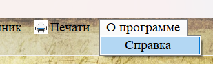

Раздел «Справочник» (меню «Справочник → Типы документов») предназначен для ведения вспомогательных справочных данных, используемых в других разделах программы.

Рис. 1. Пункт меню «Справочник» в главном окне программы
Назначение раздела
В разделе «Справочник» хранятся справочные данные, которые:
— Используются в выпадающих списках других форм (например, выбор типа документа при добавлении документа или коробки).
— Подлежат отдельному управлению — администратор может добавлять, редактировать или удалять значения справочника.
Доступные справочники
| Справочник | Описание и где используется |
|---|---|
| Типы документов (см. 2.4.1) | Классификация документов (курсовая, дипломная, отчёт по практике). Используется в формах добавления/редактирования документов и коробок. | Специализации (встроен в раздел «Группы») | Направления подготовки. Управляется непосредственно в разделе «Группы» (выпадающий список пополняется новыми значениями автоматически). |
| Учебные группы (раздел 2.3.1) | Список групп, к которым привязываются студенты и коробки. Управляется в разделе «Данные → Группы». |
| Коробки (раздел 2.3.2) | Справочник мест хранения документов. Управляется в разделе «Данные → Коробки». |
| Студенты (раздел 2.2.1) | Справочник студентов, используется для привязки документов и личных дел. |

Рис. 2. Справочник «Типы документов» используется в выпадающем списке формы добавления документа
Принцип работы справочников
Все справочные данные в программе организованы по единому принципу:
1. Централизованное хранение — каждый справочник находится в отдельной таблице базы данных.
2. Каскадное обновление — при изменении названия в справочнике (например, типа документа) оно автоматически обновляется во всех связанных записях (благодаря внешнему ключу с `ON UPDATE CASCADE`).
3. Каскадное удаление — при удалении значения из справочника удаляются и все связанные записи (например, удаление типа документа приведёт к удалению всех документов этого типа). Будьте осторожны!
При удалении записи из справочника «Типы документов» будут каскадно удалены все документы и коробки, использующие этот тип. Перед удалением типа убедитесь, что связанные записи больше не нужны или предварительно перемещены в раздел «Удалённые».
Переход к управлению справочником
Для перехода к управлению типами документов:
1. В главном меню выберите пункт «Справочник».
2. В раскрывшемся подменю выберите «Типы документов».
3. Откроется раздел для управления списком типов (подробнее — в разделе 2.4.1).